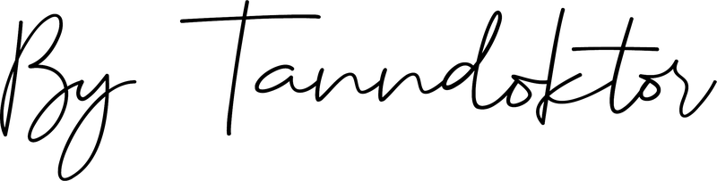
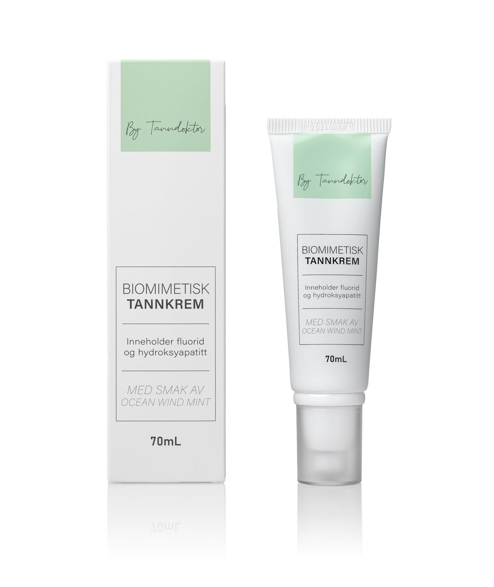
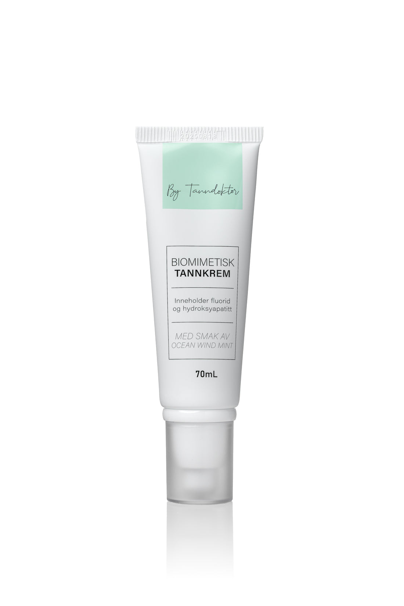
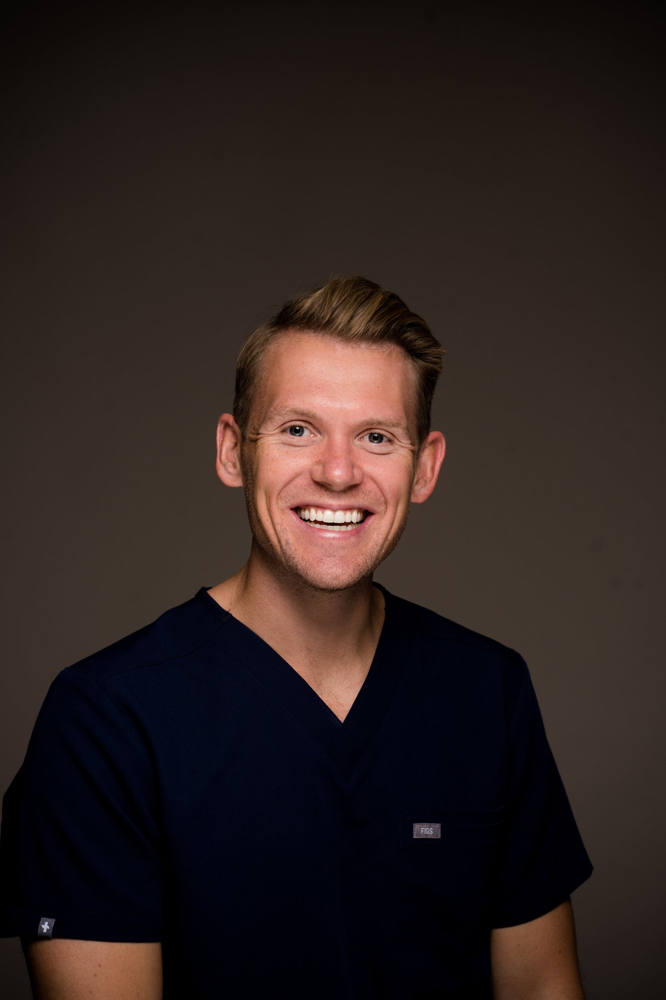
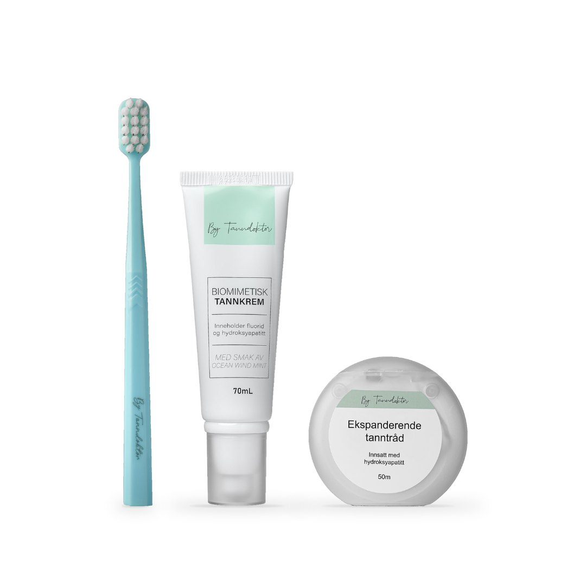
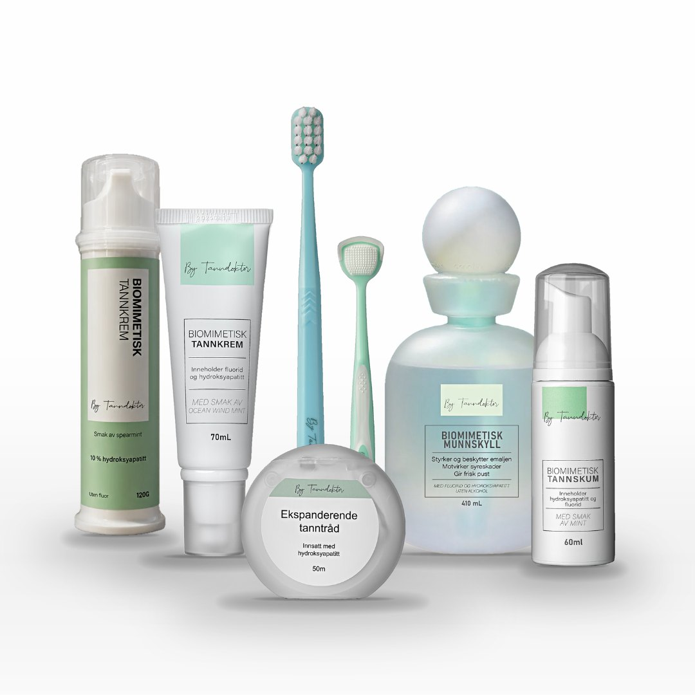

179 kr for 70 ml · SLS-fri · for voksne og ungdom over 12 år


«Biomimetisk» betyr å etterligne naturen. Tannemaljen består i stor grad av hydroksyapatitt, derfor er tannkremen utviklet med det samme mineralet.
Mineralet som tannemaljen hovedsakelig består av, inspirert av tennenes naturlige oppbygning.
Den anbefalte fluorstyrken for voksne, som bidrar til å forebygge karies ved daglig bruk.
Fri for SLS (natriumlaurylsulfat) og utviklet for å føles behagelig, også for deg med sensitiv munn.
Sink bidrar til friskere pust, og tannkremen er beriket med prebiotiske enzymer for ekstra forsvar.
ByTanndoktor ble grunnlagt av tannlege Petter Gjessing Johnsen i 2021, og de tre siste årene har gått med til å utvikle produktene.

Tannkremen finnes alene og i pakkene, sammen med ultramyk tannbørste og ekspanderende tanntråd.

Ultramyk tannbørste, biomimetisk tannkrem med fluor og ekspanderende tanntråd. For deg som vil prøve ByTanndoktor.

Hele rutinen: tannkrem med og uten fluor, tannskum, munnskyll, tannbørste, tanntråd og tungeskrape. Gratis frakt.
Pump ut ca. 1 cm tannkrem, puss i minst 2 minutter, spytt ut og unngå å skylle munnen med vann etterpå. Bruk morgen og kveld.
Kjøp tannkremen179 kr for 70 mlPosten Bring · normal leveringstid 3–5 virkedager fra pakken er sendt